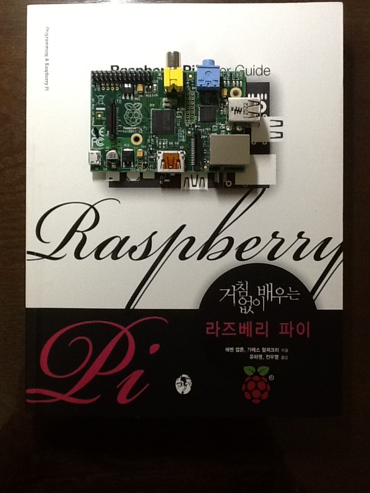
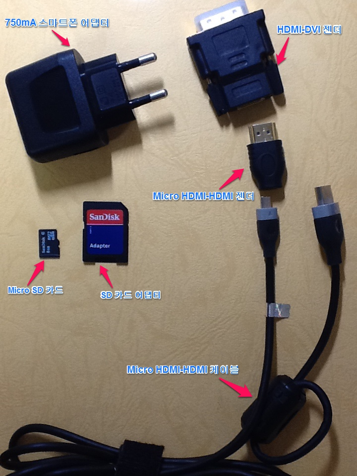
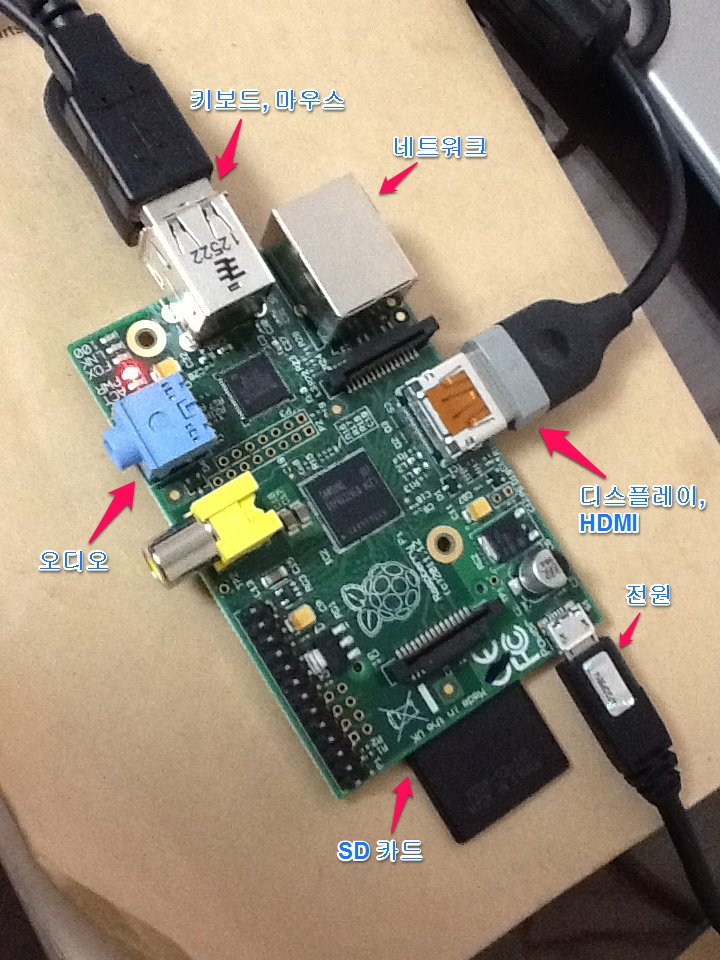
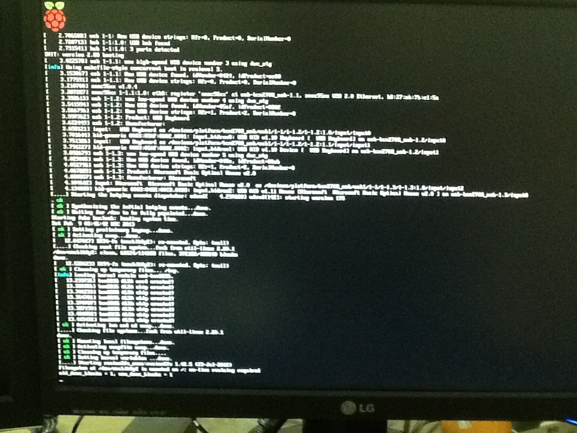
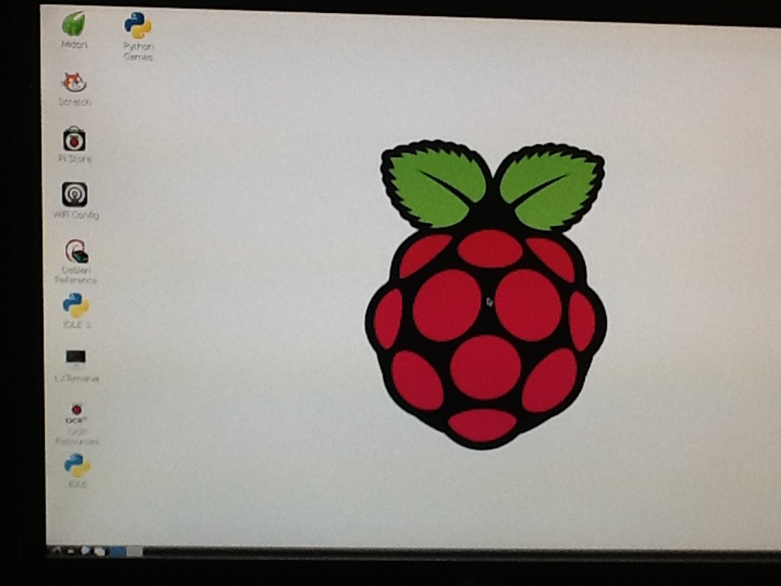

21세기형 장난감, 라즈베리 파이...
Sunday, May 5 2013 9:39 AM페친 몇분의 좋아요를 따라서 페북 페이지 "거침없이 배우는 라즈베리 파이"를 좋아하게(?) 됐다. ㅎㅎ (페북 페이지는 '구독'이라고 해야 하는건지, '가입'이라고 해야 하는건지...)
관심이 있던터라 책이 나왔다는 소식에 반갑긴 했지만, 서랍안에 있는 아두이노를 생각하니 마음이 심난해졌다.
아두이노는 램프에 불 한번 켜보고 서랍에 보관중이다. ㅡㅡ;;
분명 재미있긴 할텐데... ㅎㅎ
몇일 고민하고 있었는데 라즈베리 파이 모델 B를 공구한다는 소식을 듣고 아무 생각없이 신청을 했다. 정말 순식간에 일어난 일이었다. ㅜㅜ;;
책(김국현님의 후기)은 따로 신청했다.

라즈베리 파이는 컴퓨터다.
생각해보니 나는 라즈베리 파이에 대해서 거의 모르는 상태에서 이 모든 일을 저질렀다. 그냥 단순히 아두이노처럼 피지컬 컴퓨팅을 하는 도구 정도로만 생각했었다. 그리고 그 생각이 잘못된다는 것을 라즈베리 파이가 도착해서 개봉하는 순간 깨달았다. USB, HDMI, 랜포트 등...
아니나 다를까 책을 보니 옮긴이의 글 첫 문장이 이러했다. "라즈베리 파이는 컴퓨터다."
책을 휘리릭 훑어 보았다. 아... 이런... SD 카드에 리눅스를 올린다. 컴퓨터 맞다. ㅋㅋ 나 몰라도 너무 몰랐다.
라즈베리 파이 시스템의 핵심 프로세서는 ARM 기반의 Broadcom BCM2835 시스템 온 칩(SoC) 멀티미디어 프로세서이다.
우선 부팅 먼저 시켜보기로 했다. 무엇이 필요한지 또 책을 휘리릭... 없는게 너무 많네.
- 전원 : Micro-USB connector로 공급받는다. 700mA 정도를 필요로 한다. 다행히 스마트폰 어댑터가 750mA.
- 디스플레이 : HDMI, 스마트폰에서 쓰던 HDMI-마이크로 HDMI 케이블이 있어서 2개 젠더(마이크로 HDMI-HDMI, HDMI-DVI) 구입.
- 오디오 : 일반 헤드셋이나 스피커.
- 키보드, 마우스 : USB 포트. 무선 키보드, 마우스
- 네트워크 : 우선은 유선으로. USB 무선 어댑터 구입 예정.
- SD 카드 : 스마트폰에서 쓰던 8GB Micro SD가 있었는데 다행히 SD Adapter가 있어서 사용.

다음으로 OS를 올렸다. 책에는 SD 카드 플래싱이라고 되어 있고 OS별로 플래싱하는 법을 소개하고 있다. 나는 Windows에서...
- 라즈베리 파이용 LINUX 배포판 다운로드 : 라즈베리 파이 웹사이트
- 이미지 라이터 다운로드 : 공식 웹사이트
- 이미지 라이터를 실행하여 LINUX 배포판 이미지를 오픈하고 SD 카드에 write 한다.
드디어 SD 카드를 보드에 꼽고 모니터에 HDMI-DVI 케이블 연결하고 키보드, 마우스 USB로 연결하고... 전원을 꼽았다. 전원의 경우 버튼이나 스위치가 따로 있는 것이 아니라서 물리적으로 꼽고, 제거하고 해야한다.

부팅이 되고, X-Window도 띄워 봤다.


일단 여기까지... :-)
다음에는 TV에 연결하고 네트워크 설정하고 무선 키보드, 마우스로 거실에서 ㅋㅋ
음... 그리고 뭘 해야할까???
About Author

Juhoi Kim
blog: http://juhoi.github.io
twitter: @ByJuhoi
github: juhoi
모든 것은 나의 선택에 달려있다.